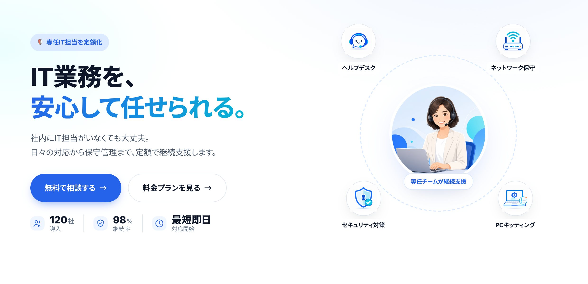

「社内にIT担当者がいない」中小企業に向けた、
ひとり情シス代行サブスク「OFISYS（オフィシス）」のLPを作った。
文章で説明する代わりに、画面の動きでサービスの中身が伝わるように設計した試み。
BtoB（会社向け）のサービスサイトは、扱う内容が形のないものほど難しい。「ヘルプデスク」「ネットワーク保守」と文字で並べても、読む人の頭にはなかなか絵が浮かばない。今回はそこを、画面の動きそのものでサービスの中身を伝えることに挑戦した。
作ったのは、架空のBtoB SaaS 「OFISYS（オフィシス）」。LPは公開済みで、実物をそのまま触れる。これまでLP・予約システム・コーポレートサイトは作ってきたが、「月額サブスク型サービスのLP」は手元になかったので、ポートフォリオの新しい1枚として制作した。
OFISYS は、「社内に専任のIT担当者がいない」中小企業に向けた、ひとり情シス代行の月額サブスクという設定のサービス。 ヘルプデスク・ネットワーク保守・セキュリティ・PCのキッティング（初期設定）を、月額定額でまるごと引き受ける——という想定で設計した。
BtoB SaaSのLPに必要な要素——信頼感のあるヒーロー、サービス内容の整理、料金プランの比較、よくある質問——を、 外部のフレームワークを一切使わず、純粋な HTML / CSS / JavaScript だけで実装している。
サービスの中身を表すアイコン画像も、トンマナを揃えて4枚オリジナルで制作した。色味も世界観も「同じサービスの絵」として一貫させている。
このLPの主役は、文章ではなく動きだ。意味のない装飾ではなく、一つひとつの動きが「サービスの理解」につながるように設計した。
ヒーロー（一番上の大見出し）は、セリフ体の文字が1文字ずつ打ち込まれ、語尾だけが入れ替わる演出にした。「IT業務を、◯◯」の◯◯がタイプし直されることで、このサービスが何を解決してくれるのかが、読む前に視線へ飛び込んでくる。最初の数秒で興味を引くための仕掛けだ。
「できること」のセクションは、スクロールに合わせて道具箱の中から4つのサービスが順番に飛び出してくる演出にした。画面を固定（sticky）したまま、時間差とわずかな跳ね返り（オーバーシュート）をつけて飛び出させることで、「IT代行＝あなたの会社の道具箱」というテーマを、言葉でなく動きで伝える。読み手が手を動かす（スクロールする）たびに、サービスが一つずつ顔を出す。
ヒーローには「サービスが繋がる」構図を採用。中央の専任チームを4つのサービスが取り囲み、各サービスにカーソルを乗せる（スマホはタップ）と、その場で詳細がポップする。全部を一度に説明せず、興味を持った部分だけ深掘りできる作りにした。
料金表には、月払い・年払いを切り替えるトグルを付けた。スイッチを押すと金額がその場で書き換わる、SaaSサイトでおなじみのUI。「年払いだといくら安くなるか」を、ページを移動せず一目で比べられる。
このほか、よくある質問はクリックで開閉するアコーディオン、スクロールで追従するヘッダー、スマホ用メニューなど、細部の挙動まで素のJavaScriptで実装している。外部ライブラリに頼らないぶんページが軽く、保守のときに「ライブラリのバージョン上げ」みたいな引き継ぎコストが出ない。

— ブルー基調のSaaSムード。中央のチームを4つのサービスが囲む構図
今回は制作と並行して、自分用のデザインのものさし（デザインシステム）を整えた。 余白・文字サイズ・配色・動きの作法をルール化しておき、案件ごとに「ムード」を切り替えて使えるようにしたもの。 OFISYS は、その中の 「SaaS（ブルー基調・信頼感）」ムードの基準実例として作っている。
狙いはシンプルで、毎回ゼロから悩むのをやめて、品質のスタートラインを引き上げること。
色は CSS Custom Properties（テーマ変数）で一括管理しているので、ブランドカラーを変えたくなっても1箇所の数値を書き換えるだけで全体に反映される。
OFISYS は、ロゴ・サービスアイコン・人物イラストまで、すべてオリジナルで制作している。ストック画像は1枚も使っていない。
SVG 形式で、どんな画面サイズでも輪郭がくっきり出る「写真を撮る」「素材を買う」をやめて、必要なときに必要なだけ作るに切り替えると、ブランドの一貫性も、コストも、時間も同時に良くなる。
HTML / CSS
ページの骨組みと見た目を作る言語
JavaScript
タイプライター・道具箱演出・料金トグルなど「動き」を素の状態から実装
SVG ロゴ
拡大しても滲まないベクター形式のオリジナルロゴ
gpt-image-2
サービスアイコン・人物イラストを生成
Cloudflare Pages
サイトを世界中に高速配信（無料・SSL自動）
Claude Code
AIコーディング環境
標準の半分〜2/3の時間で実装
最後に、これを kokona-makes.dev の Works No.13 として追加した。 作品詳細ページには概要・こだわり・技術構成を載せて、「サイトを見る →」ボタンから本物の OFISYS へ飛べるようにしている。 ポートフォリオトップ → 作品詳細 → 実物の3ステップで、「文章で理解 → 実物で確認」が自然に流れる動線だ。
— What I Made
形のないサービスほど、言葉だけでは伝わりにくい。 だからこのLPは、タイプライターも、道具箱から飛び出す演出も、料金トグルも、 ぜんぶ「サービスの中身を理解してもらう」という1つの目的に向けて作った。 動きは飾りではなく、説明の手段になり得る——それを確かめるための1枚。